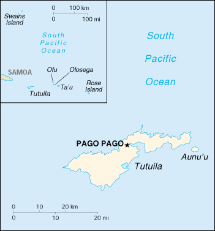

(territory of the US)
|
American Samoa (territory of the US) |
|
| Introduction Geography People Government Economy Communications Transportation Military Transnational Issues | ||
|  | ||
| American Samoa | Introduction | Top of Page |
| Background: | Settled as early as 1000 B. C., Samoa was "discovered" by European explorers in the 18th century. International rivalries in the latter half of the 19th century were settled by an 1899 treaty in which Germany and the US divided the Samoan archipelago. The US formally occupied its portion - a smaller group of eastern islands with the excellent harbor of Pago Pago - the following year. |
| American Samoa | Geography | Top of Page |
| Location: | Oceania, group of islands in the South Pacific Ocean, about one-half of the way from Hawaii to New Zealand |
| Geographic coordinates: | 14 20 S, 170 00 W |
| Map references: | Oceania |
| Area: |
total:
199 sq km
land: 199 sq km water: 0 sq km note: includes Rose Island and Swains Island |
| Area - comparative: | slightly larger than Washington, DC |
| Land boundaries: | 0 km |
| Coastline: | 116 km |
| Maritime claims: |
exclusive economic zone:
200 NM
territorial sea: 12 NM |
| Climate: | tropical marine, moderated by southeast trade winds; annual rainfall averages about 3 m; rainy season from November to April, dry season from May to October; little seasonal temperature variation |
| Terrain: | five volcanic islands with rugged peaks and limited coastal plains, two coral atolls (Rose Island, Swains Island) |
| Elevation extremes: |
lowest point:
Pacific Ocean 0 m
highest point: Lata 966 m |
| Natural resources: | pumice, pumicite |
| Land use: |
arable land:
5%
permanent crops: 10% permanent pastures: 0% forests and woodland: 70% other: 15% (1993 est.) |
| Irrigated land: | NA sq km |
| Natural hazards: | typhoons common from December to March |
| Environment - current issues: | limited natural fresh water resources; the water division of the government has spent substantial funds in the past few years to improve water catchments and pipelines |
| Geography - note: | Pago Pago has one of the best natural deepwater harbors in the South Pacific Ocean, sheltered by shape from rough seas and protected by peripheral mountains from high winds; strategic location in the South Pacific Ocean |
| American Samoa | People | Top of Page |
| Population: | 67,084 (July 2001 est.) |
| Age structure: |
0-14 years:
38.44% (male 13,278; female 12,512)
15-64 years: 56.57% (male 18,784; female 19,163) 65 years and over: 4.99% (male 1,779; female 1,568) (2001 est.) |
| Population growth rate: | 2.42% (2001 est.) |
| Birth rate: | 24.88 births/1,000 population (2001 est.) |
| Death rate: | 4.31 deaths/1,000 population (2001 est.) |
| Net migration rate: | 3.58 migrant(s)/1,000 population (2001 est.) |
| Sex ratio: |
at birth:
1.06 male(s)/female
under 15 years: 1.06 male(s)/female 15-64 years: 0.98 male(s)/female 65 years and over: 1.13 male(s)/female total population: 1.02 male(s)/female (2001 est.) |
| Infant mortality rate: | 10.36 deaths/1,000 live births (2001 est.) |
| Life expectancy at birth: |
total population:
75.32 years
male: 70.89 years female: 80.02 years (2001 est.) |
| Total fertility rate: | 3.5 children born/woman (2001 est.) |
| HIV/AIDS - adult prevalence rate: | NA% |
| HIV/AIDS - people living with HIV/AIDS: | NA |
| HIV/AIDS - deaths: | NA |
| Nationality: |
noun:
American Samoan(s)
adjective: American Samoan |
| Ethnic groups: | Samoan (Polynesian) 89%, Caucasian 2%, Tongan 4%, other 5% |
| Religions: | Christian Congregationalist 50%, Roman Catholic 20%, Protestant and other 30% |
| Languages: |
Samoan (closely related to Hawaiian and other Polynesian languages), English
note: most people are bilingual |
| Literacy: |
definition:
age 15 and over can read and write
total population: 97% male: 98% female: 97% (1980 est.) |
| American Samoa | Government | Top of Page |
| Country name: |
conventional long form:
Territory of American Samoa
conventional short form: American Samoa abbreviation: AS |
| Dependency status: | unincorporated and unorganized territory of the US; administered by the Office of Insular Affairs, US Department of the Interior |
| Government type: | NA |
| Capital: | Pago Pago |
| Administrative divisions: | none (territory of the US); there are no first-order administrative divisions as defined by the US Government, but there are three districts and two islands* at the second order; Eastern, Manu'a, Rose Island*, Swains Island*, Western |
| Independence: | none (territory of the US) |
| National holiday: | Flag Day, 17 April (1900) |
| Constitution: | ratified 1966, in effect 1967 |
| Legal system: | NA |
| Suffrage: | 18 years of age; universal |
| Executive branch: |
chief of state:
President George W. BUSH of the US (since 20 January 2001) and Vice President Richard B. CHENEY (since 20 January 2001)
head of government: Governor Tauese P. SUNIA (since 3 January 1997) and Lieutenant Governor Togiola TULAFONO (since 3 January 1997) cabinet: NA elections: US president and vice president elected on the same ticket for four-year terms; governor and lieutenant governor elected on the same ticket by popular vote for four-year terms; election last held 7 November 2000 (next to be held NA November 2004) election results: Tauese P. SUNIA reelected governor; percent of vote - Tauese P. SUNIA (Democrat) 50.7%, Lealaifuaneva Peter REID (independent) 47.8% |
| Legislative branch: |
bicameral Fono or Legislative Assembly consists of the House of Representatives (21 seats - 20 of which are elected by popular vote and 1 is an appointed, nonvoting delegate from Swains Island; members serve two-year terms) and the Senate (18 seats; members are elected from local chiefs and serve four-year terms)
elections: House of Representatives - last held 7 November 2000 (next to be held NA November 2002); Senate - last held 7 November 2000 (next to be held NA November 2004) election results: House of Representatives - percent of vote by party - NA%; seats by party - NA; Senate - percent of vote by party - NA%; seats by party - NA; note - only independents elected note: American Samoa elects one delegate to the US House of Representatives; election last held 7 November 2000 (next to be held NA November 2002); results - Eni F. H. FALEOMAVAEGA (Democrat) reelected as delegate for a sixth term |
| Judicial branch: | High Court (chief justice and associate justices are appointed by the US Secretary of the Interior) |
| Political parties and leaders: | Democratic Party [leader NA]; Republican Party [leader NA] |
| Political pressure groups and leaders: | NA |
| International organization participation: | ESCAP (associate), Interpol (subbureau), IOC, SPC |
| Diplomatic representation in the US: | none (territory of the US) |
| Diplomatic representation from the US: | none (territory of the US) |
| Flag description: | blue, with a white triangle edged in red that is based on the outer side and extends to the hoist side; a brown and white American bald eagle flying toward the hoist side is carrying two traditional Samoan symbols of authority, a staff and a war club |
| American Samoa | Economy | Top of Page |
| Economy - overview: | This is a traditional Polynesian economy in which more than 90% of the land is communally owned. Economic activity is strongly linked to the US, with which American Samoa conducts the great bulk of its foreign trade. Tuna fishing and tuna processing plants are the backbone of the private sector, with canned tuna the primary export. Transfers from the US Government add substantially to American Samoa's economic well-being. Attempts by the government to develop a larger and broader economy are restrained by Samoa's remote location, its limited transportation, and its devastating hurricanes. Tourism, a developing sector, has been held back by the recurring financial difficulties in East Asia. |
| GDP: | purchasing power parity - $500 million (2000 est.) |
| GDP - real growth rate: | NA% |
| GDP - per capita: | purchasing power parity - $8,000 (2000 est.) |
| GDP - composition by sector: |
agriculture:
NA%
industry: NA% services: NA% |
| Population below poverty line: | NA% |
| Household income or consumption by percentage share: |
lowest 10%:
NA%
highest 10%: NA% |
| Inflation rate (consumer prices): | NA% |
| Labor force: | 14,000 (1996) |
| Labor force - by occupation: | government 33%, tuna canneries 34%, other 33% (1990) |
| Unemployment rate: | 16% (1993) |
| Budget: |
revenues:
$121 million (37% in local revenue and 63% in US grants)
expenditures: $127 million, including capital expenditures of $NA (FY96/97) |
| Industries: | tuna canneries (largely dependent on foreign fishing vessels), handicrafts |
| Industrial production growth rate: | NA% |
| Electricity - production: | 130 million kWh (1999) |
| Electricity - production by source: |
fossil fuel:
100%
hydro: 0% nuclear: 0% other: 0% (1999) |
| Electricity - consumption: | 120.9 million kWh (1999) |
| Electricity - exports: | 0 kWh (1999) |
| Electricity - imports: | 0 kWh (1999) |
| Agriculture - products: | bananas, coconuts, vegetables, taro, breadfruit, yams, copra, pineapples, papayas; dairy products, livestock |
| Exports: | $500 million (1998) |
| Exports - commodities: | canned tuna 93% |
| Exports - partners: | US 99.6% |
| Imports: | $471 million (1996) |
| Imports - commodities: | materials for canneries 56%, food 8%, petroleum products 7%, machinery and parts 6% |
| Imports - partners: | US 62%, Japan 9%, NZ 7%, Australia 11%, Fiji 4%, other 7% |
| Debt - external: | $NA |
| Economic aid - recipient: | important financial support from the US, more than $40 million in 1994 |
| Currency: | US dollar (USD) |
| Currency code: | USD |
| Exchange rates: | the US dollar is used |
| Fiscal year: | 1 October - 30 September |
| American Samoa | Communications | Top of Page |
| Telephones - main lines in use: | 13,000 (1997) |
| Telephones - mobile cellular: | 2,550 (1997) |
| Telephone system: |
general assessment:
NA
domestic: good telex, telegraph, facsimile and cellular telephone services; domestic satellite system with 1 Comsat earth station international: satellite earth station - 1 Intelsat (Pacific Ocean) |
| Radio broadcast stations: | AM 1, FM 1, shortwave 0 (1998) |
| Radios: | 57,000 (1997) |
| Television broadcast stations: | 1 (1997) |
| Televisions: | 14,000 (1997) |
| Internet country code: | .as |
| Internet Service Providers (ISPs): | 1 (2000) |
| Internet users: | NA |
| American Samoa | Transportation | Top of Page |
| Railways: | 0 km |
| Highways: |
total:
350 km
paved: 150 km unpaved: 200 km |
| Waterways: | none |
| Ports and harbors: | Aunu'u (new construction), Auasi, Faleosao, Ofu, Pago Pago, Ta'u |
| Merchant marine: | none (2000 est.) |
| Airports: | 4 (2000 est.) |
| Airports - with paved runways: |
total:
2
2,438 to 3,047 m: 1 under 914 m: 1 (2000 est.) |
| Airports - with unpaved runways: |
total:
2
under 914 m: 2 (2000 est.) |
| American Samoa | Military | Top of Page |
| Military - note: | defense is the responsibility of the US |
| American Samoa | Transnational Issues | Top of Page |
| Disputes - international: | none |
{kind=link}
{kind=link}